Camino de Santiago
Camino Francés · Roncesvalles – Logroño
19,99 €Próximamente en Amazon
Camino de Santiago por tramos, senderos GR, Caminos Naturales y Vías Verdes. Bordados sobre sarga, para planchar o coser en la mochila.
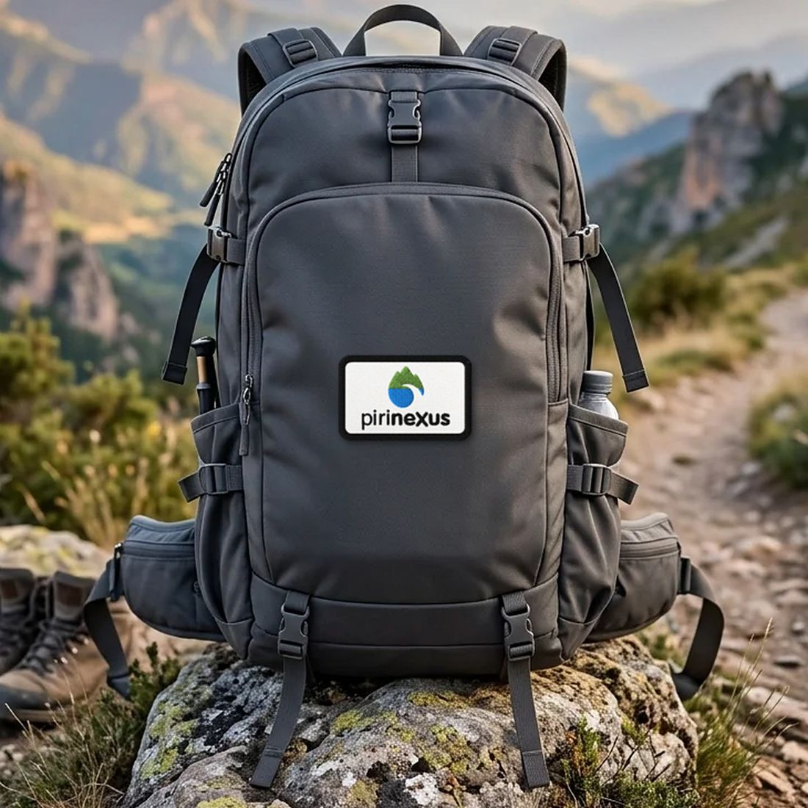
Pirinexus es una ruta cicloturista circular que une las comarcas de Girona con el Rosellón francés cruzando el Pirineo. Unos 350 km de vías verdes y carreteras tranquilas a un lado y otro de la frontera.
Rectángulo de 8,9 × 5,7 cm, para planchar o coser en la mochila o en la alforja.
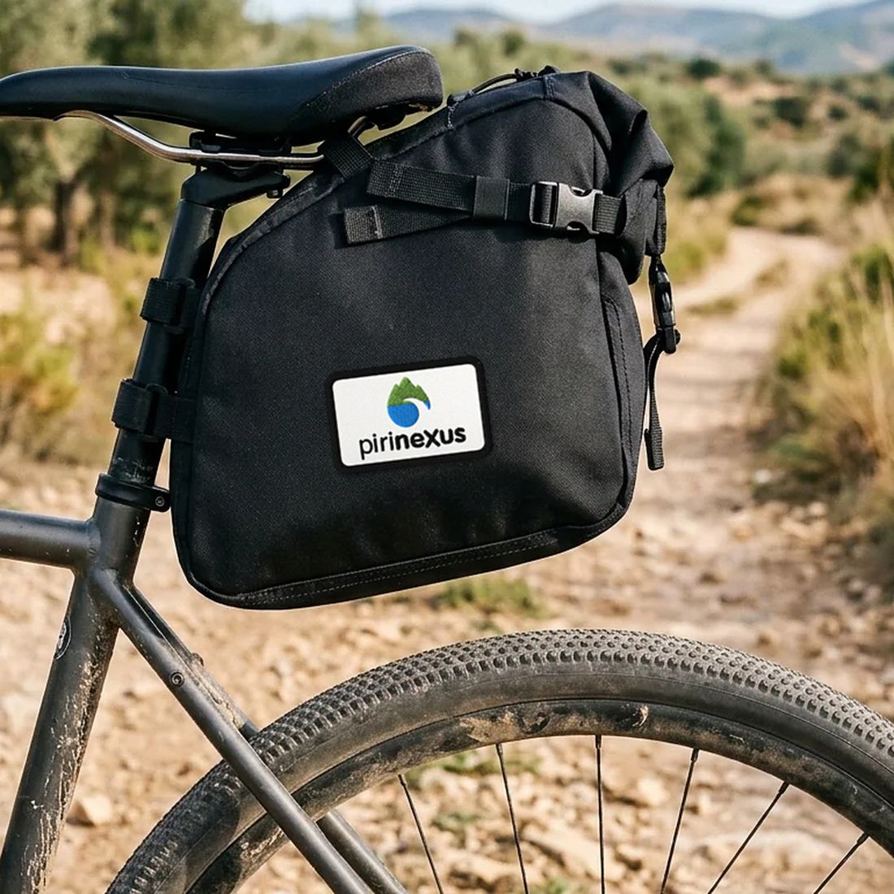
Todos a 19,99 €, IVA incluido. Envío gratis a la península.
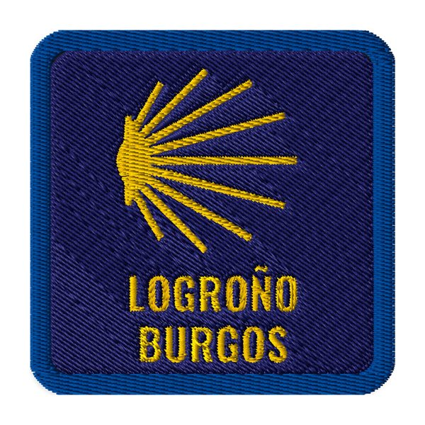
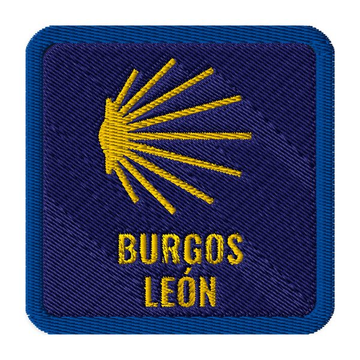


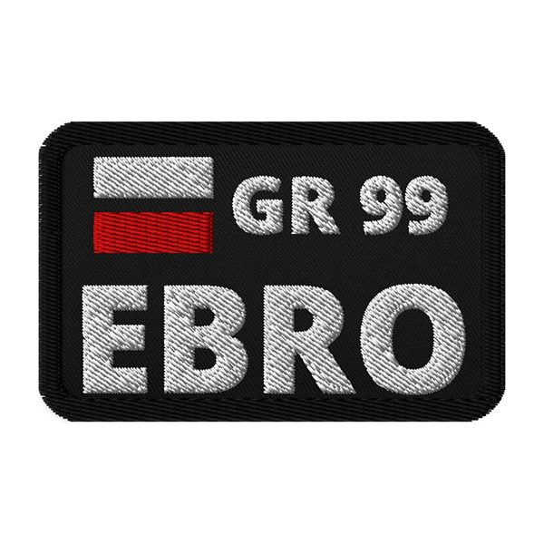


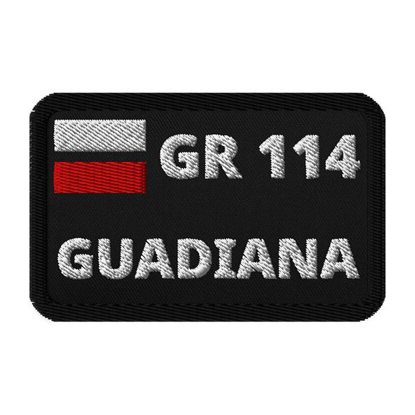
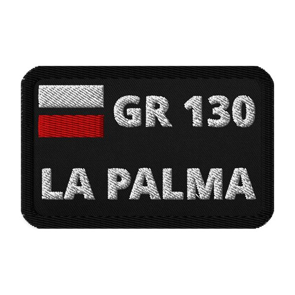


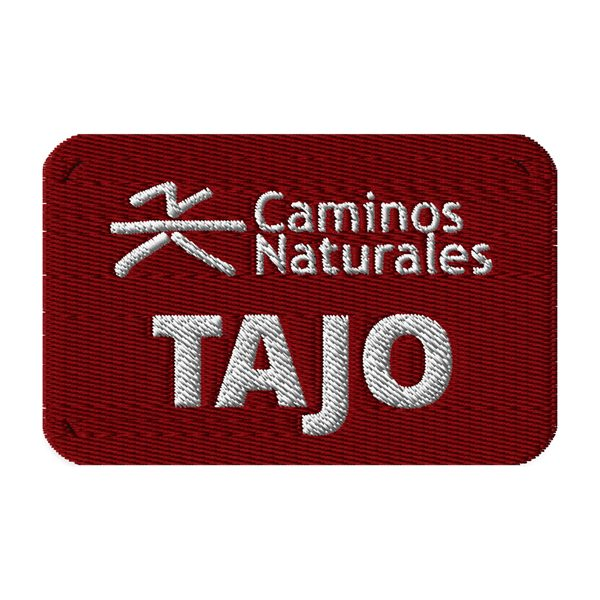

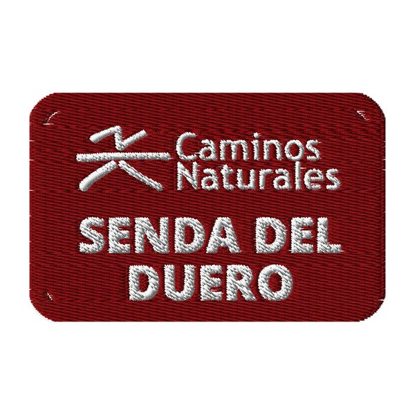

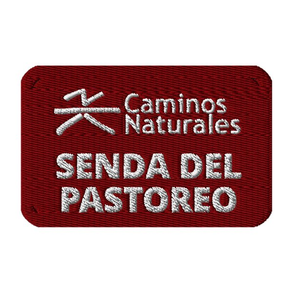


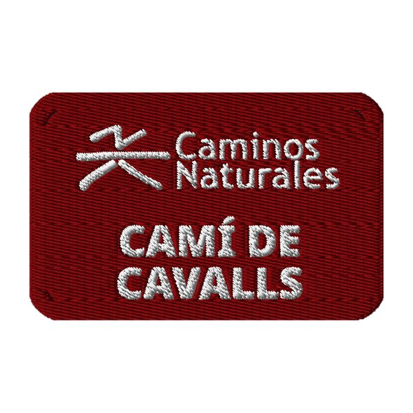
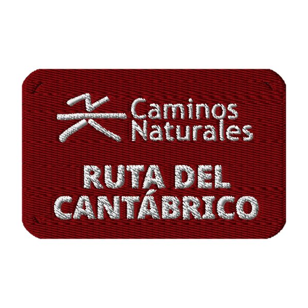

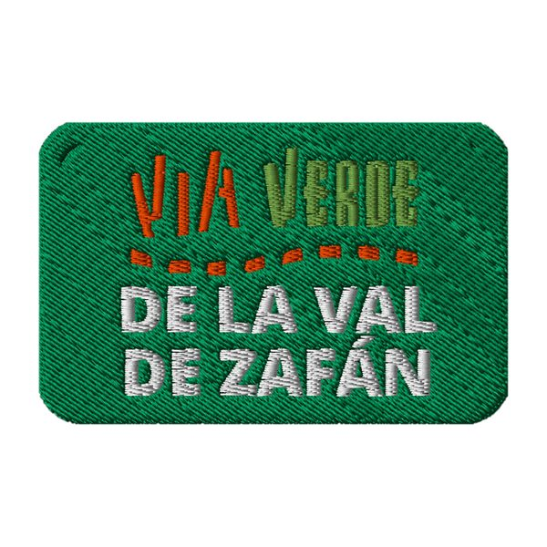


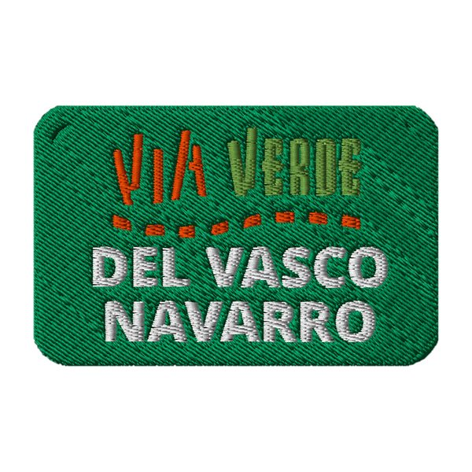

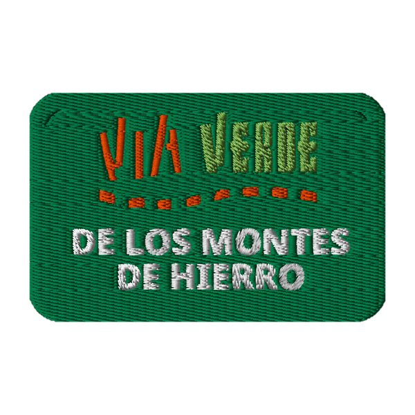
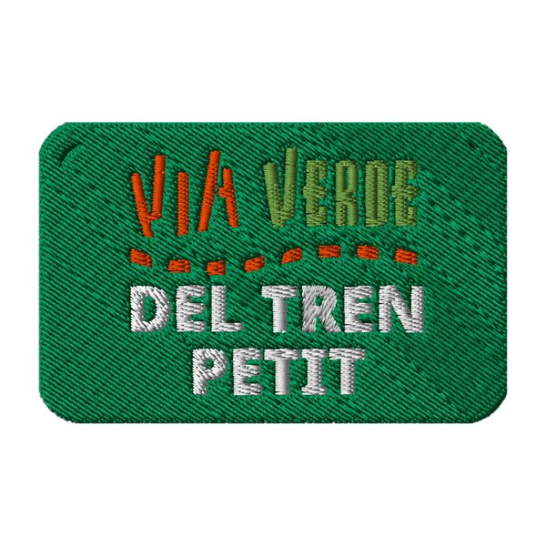


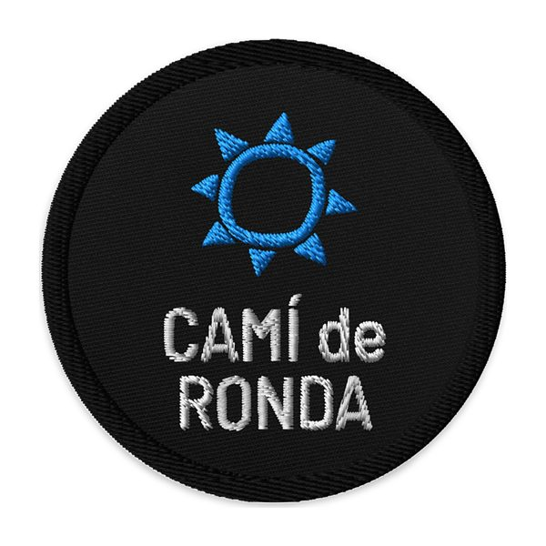
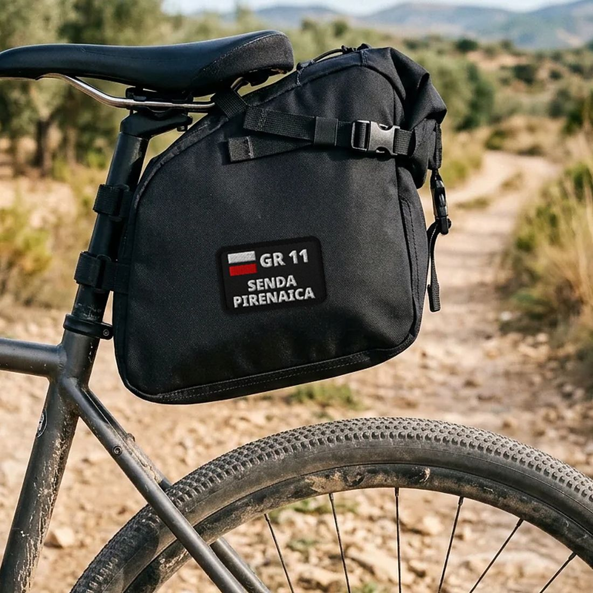
Bordado sobre sarga: 74 % poliéster, 26 % algodón, con el borde rematado.
El plazo de entrega aparece en la página de cada parche en Amazon antes de comprar.
No. Son diseños propios inspirados en las rutas. No tenemos relación con las federaciones, ayuntamientos ni organismos que gestionan los caminos.
Los rectangulares miden 8,9 × 5,7 cm, los cuadrados 7,6 × 7,6 cm, los verticales de Málaga 5,7 × 8,9 cm y el del Camí de Ronda 7,6 cm de diámetro.
Planchados aguantan el uso normal. Si la prenda o la mochila se lava a menudo, recomendamos coserlos además.
De momento, en Amazon.es. Cada parche tiene su enlace en esta página; la compra, el pago y las devoluciones se gestionan en Amazon.
Escríbenos a hola@tramos.eu con el nombre de la ruta y el tramo. Vamos ampliando el catálogo con lo que nos pedís.